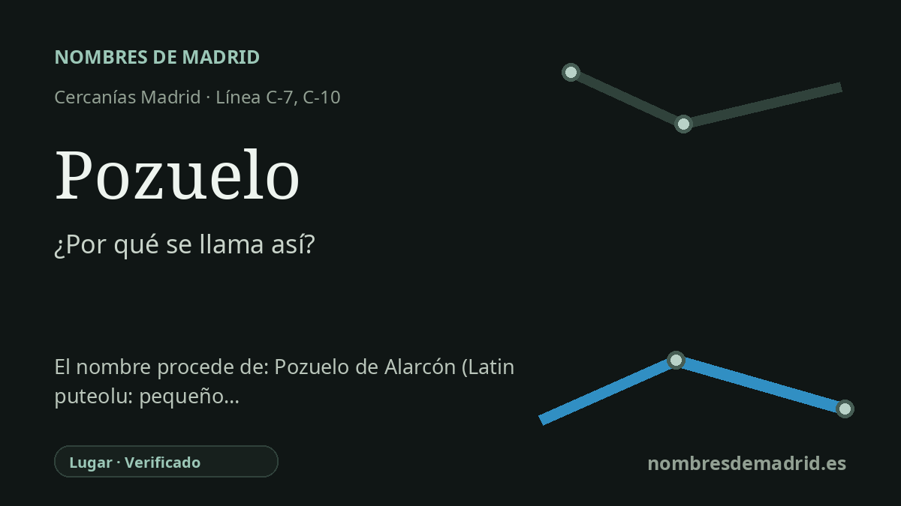

Publicado el · Investigación de Nombres de Madrid · Cómo verificamos cada origen · 6 fuentes consultadas
Respuesta rápida
La estación de Pozuelo debe su nombre a Pozuelo de Alarcón. El topónimo alude a pozos o manantiales, mientras que «de Alarcón» se añadió tras la adquisición de la villa por Gabriel de Ocaña y Alarcón en 1632.
La historia del nombre
La estación de Cercanías llamada **Pozuelo** toma su nombre del municipio al que sirve, Pozuelo de Alarcón, al oeste de Madrid. La página actual de Adif recoge la estación simplemente como Pozuelo, aunque el municipio que explica el topónimo completo es Pozuelo de Alarcón.
La parte más antigua del nombre es **Pozuelo**. La explicación toponímica más sólida lo entiende como diminutivo castellano de **pozo**: un pozo pequeño, o un lugar identificado por pozos y manantiales. La historia oficial municipal también relaciona el nombre con la existencia de pozos y manantiales en el territorio.
El nombre está documentado desde la Edad Media. El Ayuntamiento sitúa la primera aparición de Pozuelo en 1208, cuando Alfonso VIII fijó límites entre Segovia y otros territorios próximos y el texto indicó que **Pozolos** quedaba de parte de Madrid. Durante siglos la localidad fue conocida como **Pozuelo de Aravaca**, porque pertenecía al sexmo de Aravaca, una división administrativa del territorio medieval madrileño.
La segunda parte del nombre municipal, **de Alarcón**, llegó después. En 1632 la antigua jurisdicción de realengo fue adquirida por Gabriel de Ocaña y Alarcón, y la historia oficial municipal afirma que el cambio de Pozuelo de Aravaca a Pozuelo de Alarcón fue una condición de la compra. Toponomasticon Hispaniae da como fecha concreta de la venta el 31 de enero de 1632 y trata Alarcón aquí como apellido familiar, aunque ese apellido procede a su vez del topónimo conquense Alarcón.
El ferrocarril añadió otra capa a la vida pública del nombre. El tramo Madrid-El Escorial se abrió al público el 9 de agosto de 1861, y Pozuelo era la primera estación después de Madrid en una línea que después formó parte del corredor ferroviario del norte. Por eso la afirmación original es correcta en lo esencial, pero conviene matizar la parte latina: existió el diminutivo latino **puteolu**, aunque la fuente especializada considera más seguro explicar el Pozuelo madrileño como formación castellana de **pozo** que como una continuidad latina directa demostrada.